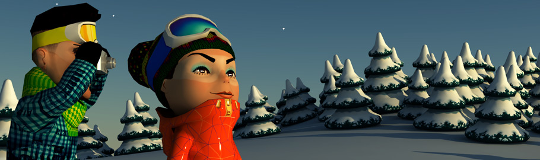

Environmental resort Top
The concept of an environmental resort accepted by Rosa Khutor includes strict adherence to the following priorities:
Rosa Khutor Resort will be engineered and constructed in accordance with the Russian ecological legislation as well the international ecological standards.
Most pistes will be developed above the tree line there by minimizing clearance works.
Introduction of alternative sources of energy along with the conventional ones.
Pistes, lifts and necessary objects of infrastructure only will be located within the skiing area.
Construction of buildings will be made by the individual cutting down of trees, in the quantity necessary only to permit such building work.
Support of ecological tourism and educational projects in the area of ecology.
Pistes will be tracked along the natural slopes and above the tree line in order to allow minimizing earthworks and tree felling.
State-of-the-art environmental technologies will be used (such as silent equipmentt, landslide protection works, conservation of forested zones, anti-avalanche systems and so on) and environmentally friendly materials.
Project realisation is carried out in cooperation with the experts of World Wide Fund for Nature (WWF) and Sochi National Park.
WWF experts are in consultation with the Rosa Khutor company on the use of ecologically clean and certified building technologies, as well as water and energy saving.
Also consultation takes place on questions connected with observance of widely accepted environmental and nature-oriented norms and standards. Scientific and other advice is given to Rosa Khutor’s initiatives in the area of ecological education and promotion of ecological tourism.
Nature protection actions are realised in coordination with management of Sochi National Park.

|
— We have accepted with gratification Rosa Khutor’s invitation to consult in constructing the first Russian alpine ski environmental resort. There have been few cases in Russia, when the investor strives to construct the resort taking due account of all possible environmental requirements. We would like to hope that Rosa Khutor’s initiative will mark the beginning of the new approach to environmental issues by big Russian business.
Igor Chestin Director WWF — Russia |
The Persian leopards Top
In the spring of 2007 Rosa Khutor Company has declared the intention to support the unique project of World Wide Fund for Nature (WWF) — «Reintroducing the Persian Leopard in the Northern Caucasus».
The aim of initiators of the project — to return the Persian Leopard to Russia. What is provided: delivery of animals from the countries where they live today, construction of pens for their maintenance and reproduction, adaptation of animals to the wild in the Caucasus.
The project is supported by the Russian Ministry of Nature Resources and Russian Federal Natural Resource Oversight Agency (Rosprirodnadzor) and supervised personally by the Chairman of the Government of the Russian Federation Vladimir Putin.
The project of reintroducing the Persian Leopard is unique, previously, there were no such projects for the reintroduction of the vanishing species in the world. The Persian leopard once was the symbol of these places and its return will positively affect the development of ecological tourism on the Kuban that is in keeping with the concept of the year-round environmental resort Rosa Khutor.
In 2009 construction of the Centre for breeding and rehabilitation of leopards in Sochi National Park was completed. On September, 19th, 2009 with the assistance of the Chairman of the Government of Russian Federation Vladimir Putin, the chairman of the Coordination commission IOC Jean-Claude Killi and executive director IOC Gilbert Felli released into pens the first two Persian leopards specially brought to Russia from Turkmenistan. These leopards will be the basis for Reintroducing the Persian Leopard in the Northern Caucasus.
|
— The Rosa Khutor Company has carefully considered all requirements of ecologists at work on the project. If during the carrying out of construction work no serious deviations from this project are allowed, we will manage to keep the beauty of the surrounding nature and cleanliness of the rivers in this area.
Nikolay Penkovsky Director of Sochi National Park |
| Share: |
|